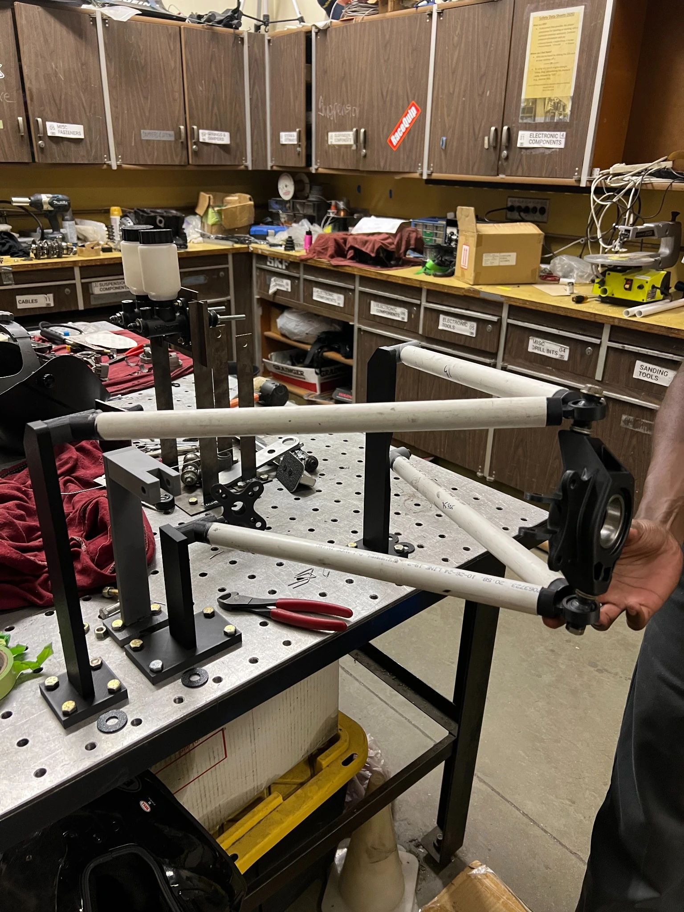
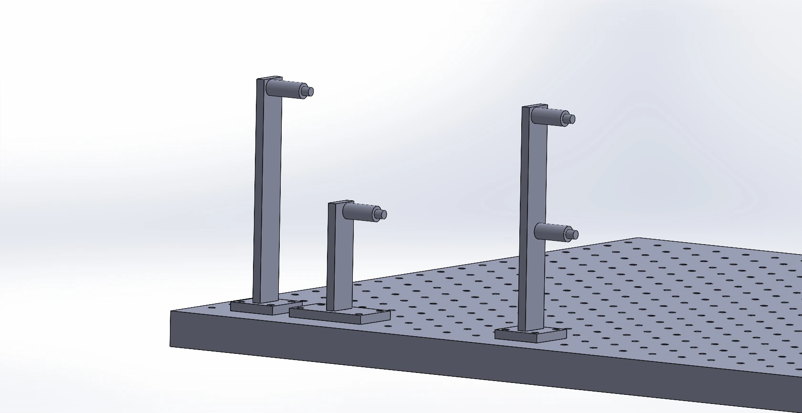
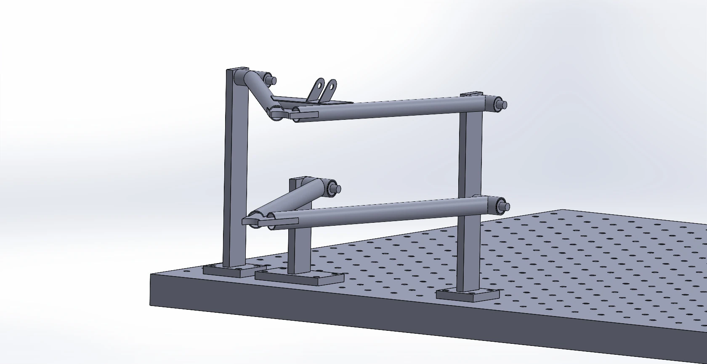
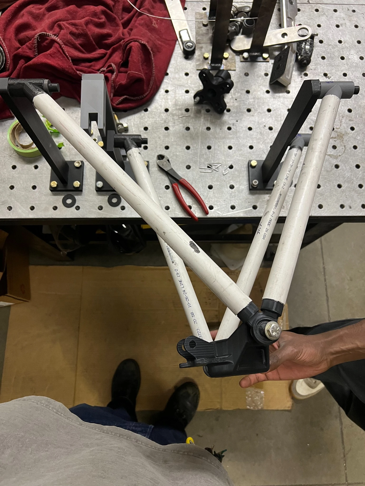
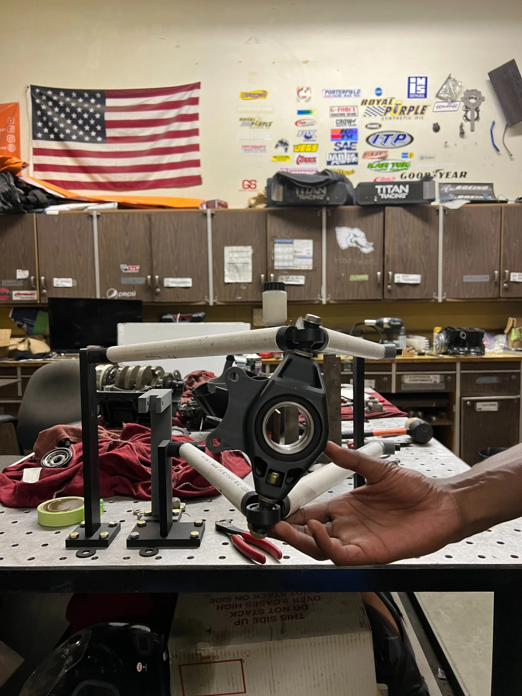

Baja SAE Suspension Development.
Designing and 3D-printing fixtures to evaluate a front suspension mockup before manufacturing.
Goal
Help the CSUF Baja SAE team evaluate revised front suspension kinematics before committing to fabricated control arms.
How I approached it
Assist with SolidWorks motion/geometry review, design printable mounting jigs, and assemble a PVC suspension mockup on a perforated table.
Result / status
Physical fixture and suspension mockup built for movement checks; no numerical suspension-performance claim.


Original project documentation: CAD models and physical build photographs. Select an image to inspect it at full size.
Explore the full project gallery ↓Test suspension motion before fabrication.
The CSUF Baja SAE team was developing new front suspension geometry and wanted a way to inspect the control arms, upright, and tie rod moving together before committing to the final components. A physical PVC mockup could make the kinematics easier to examine and discuss.
Hold the right pivot geometry.
The fixtures needed to position suspension pivots consistently while allowing the tubes and upright to move. They also needed to attach to a perforated work surface and fit within the available 3D-printer build volume.
From SolidWorks to workbench.
- 01
Supported senior team members with 2D and 3D suspension kinematics review in SolidWorks.
- 02
Designed mounting fixtures around the intended suspension geometry and separated them into printable pieces where needed.
- 03
3D printed the jigs on a Bambu Lab P1S and assembled them on the worktable.
- 04
Used the jigs to assemble a PVC mockup of the control arms, tie rod, and upright for hands-on articulation checks.
A tangible kinematics mockup.
The photographs show the physical rig, fixtures, and upright alongside the CAD models. The mockup provided a way to inspect the linkage as the team developed its geometry; the portfolio does not claim a quantified improvement in suspension performance.
Prototypes accelerate team decisions.
Simple, low-cost fixtures made it easier to verify physical motion and communicate suspension ideas without waiting for expensive manufactured components.
From SolidWorks to the workbench.
The sequence below documents the jig architecture, partial assembly, and physical suspension mockup used to inspect component motion.



